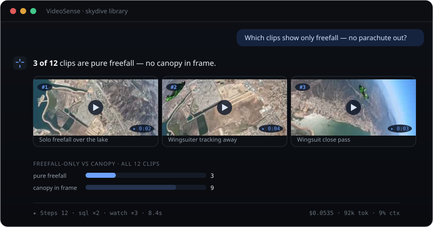

VideoSense
Flagship · AI AgentIndependent project — end-to-end conversational agent for video understanding
Ask your video library anything in plain English. A self-designed probe-and-step agent loop on Gemini 2.5 watches the raw footage, reasons across a multi-turn conversation, and answers with the playable clips and charts that prove it — each reply carrying its own cost receipt. Runs in production on Google Cloud Run, with an MCP tool layer, cross-session memory, and a τ²-bench-style suite of 170+ graded evaluation tasks.
